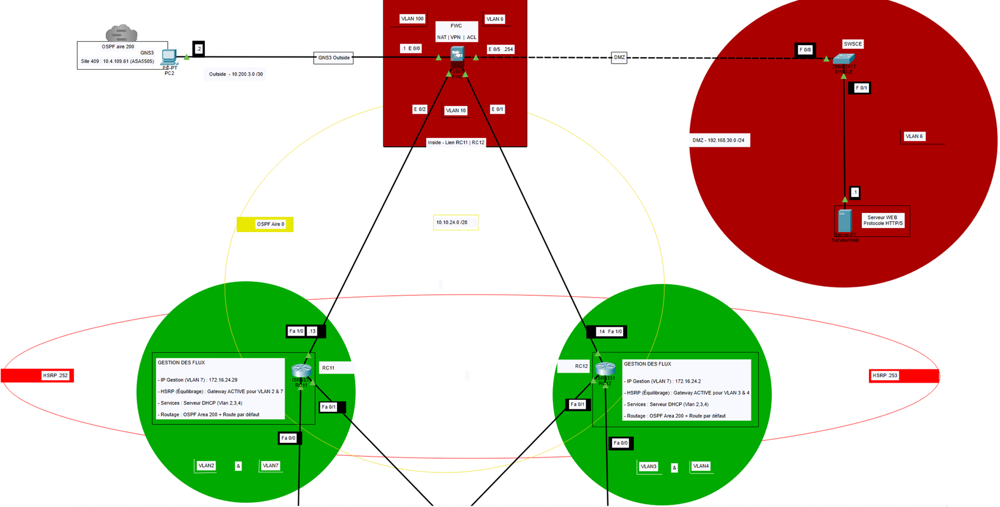
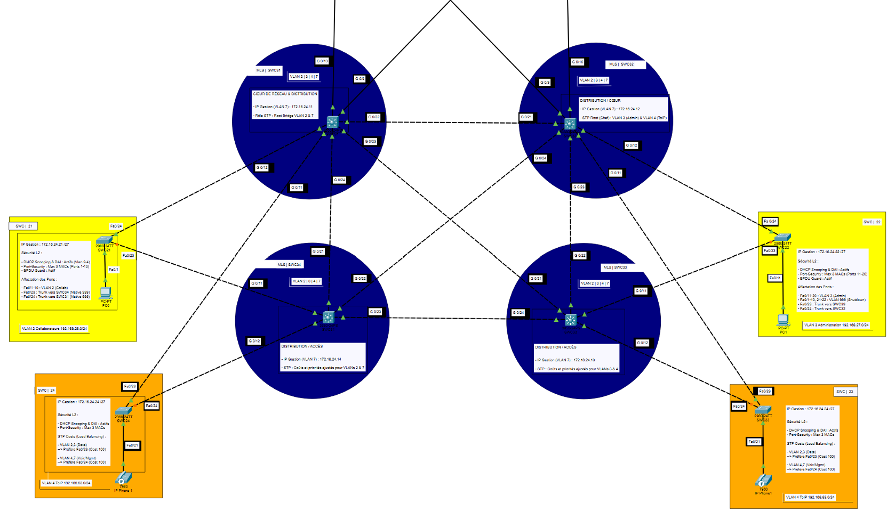
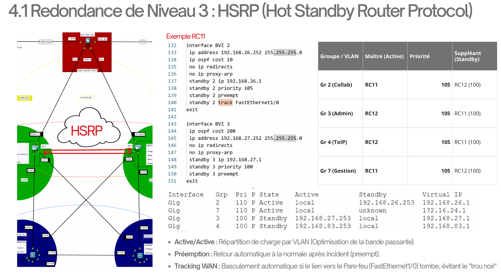
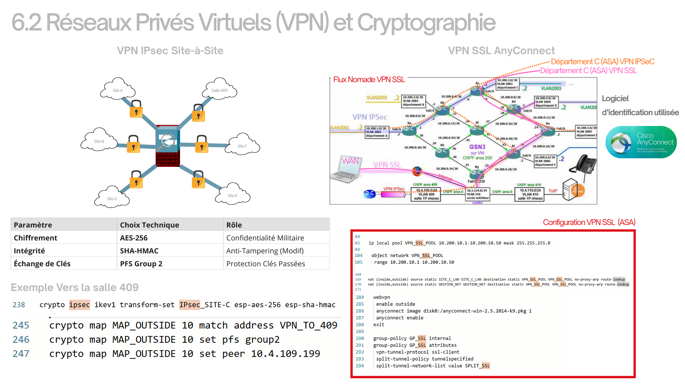

Projet : Architecture Multi-Site
Focus : Haute Disponibilité (HSRP)
Sécurité : VPN & Pare-feu
Statut : Terminé
Interconnexion de 3 sites (Nord, Sud, Est) via liaisons séries et Gigabit.
Modèle hiérarchique Cisco 3 couches : Cœur, Distribution, Accès.
Segmentation logique stricte (VLANs Direction, RH, Wifi, Invité).
Plan d'adressage VLSM optimisé pour réduire le gaspillage d'IP.
Redondance de passerelle par défaut via le protocole HSRP.
Continuité de service assurée en cas de panne d'un routeur critique.
Tunnels VPN IPSec chiffrés pour sécuriser les flux inter-sites.
Durcissement LAN : Port-Security, DAI et DHCP Snooping activés.



